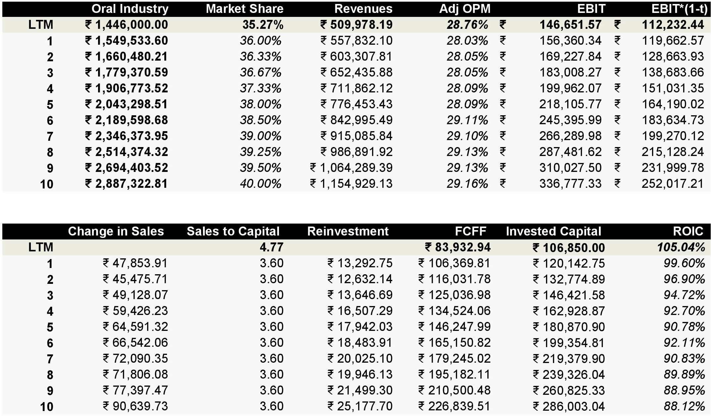

Colgate Palmolive - DCF Valuation and Equity Research
Colgate-Palmolive India Ltd is engaged in oral care products such as of toothpaste, tooth powder, toothbrush, mouthwash and personal care products. The oral care market in India is ₹14,460 crores in 2022 and Colgate Palmolive already has 35.27% market share of total oral care market. Their flagship brand Colgate is one of the most recognized oral care brands in India
The product portfolio includes various SKUs of toothpaste, tooth powder, toothbrush, mouthwash and personal care products. They are sold under its well-recognized brands i.e. Colgate and Palmolive. They have 51% market share in toothpaste segment, 48% in toothpowder and ~30% share in the toothbrush segment.
Colgate Palmolive India Ltd is a subsidairy of Colgate Palmolive Company USA which holds 51% stake in it. They pay royalty to its parent Colgate Palmolive USA Company for usage of its know-how and intellectual property.
My Business Story
Market that Colgate can grow in: Colgate Palmolive will remain the winner in oral care market (Toothpaste, Toothbrush, Floss, Tooth Powder, Mouthwash). They have products related to face wash but I don't think they are going to crack the market as well like oral care. India is already a $1.77bn market in 2022 which is tiny as compared to USA, which is a $9.62bn market and China, which is a $6.33bn market. India's oral care has big potential as the urban population is growing roughly 2% every year. More and more people will start thinking about oral care as more awareness spreads.
Competitive Advantages (Strong Parent Brand): Colgate already has 35% of the total oral care market in the palm of their hands. They just need to keep doing what they do - Pull out ridiculously high returns on their existing projects. Colgate is really good at advertising their products like the 'Smile Karo' campaign and much more.
Potential in Oral Care Industry: In India, while Oral Care category penetration is high (+95%), more than 80% of people don’t brush their teeth at night. This against the backdrop of increasing Oral Diseases, up to 77 % suffering from Gum problems every year, up to 71% children (12 years old) and upto 86.4% adults 35-45 years from Cavities, presents a situation that needs immediate attention.
Nature of Product/Service: Oral Care Products are entirely non discretionary in nature. It's risk free against recessions!
Revenues to Profits: Colgate's biggest expenditure are advertising/marketing expense, royality expense to parent company. They make about 28% Operating Profit Margin and 104% return on capital.
Strong Competition: Competition comes from Pepsodent (HUL), Dabur Red Paste or Meswak, Dant Kanti (Patanjali) and other small players.
How Much Capital Intensive?: Colgate make about ₹3 to 4 of Sales on every 1 rupee of invested capital. The manufacturing facilities are already build, very less reinvestment (repairs and maintainence) required. The company owns and operates 4 manufacturing facilities in Himachal Pradesh, Goa, Gujarat and Andhra Pradesh.
Strengths: Colgate's return on capital cannot be touched by other players. They are a cash machine for their investors.
R&D Expenses: They are working on recyclable tubes that help reducing waste generation and ultimately waste diverted towards landfill. Non-aqueous toothpaste does not contain water in the formula which reduces the Company’s water consumption.
India's Risk Free Rate
After getting familiar with Colgate Palmolive's Business Model and Key Story Points, I start my DCF valuation off by finding out the Risk Free Rate(Rf). As my nominal cash flows are going to be estimated in INR. My discount rate or cost of capital is going to match INR too.
My basis to find the risk free rate of India is to take 10 Year Government Bond Rate and substract the Default Spread. Fitch's Credit Rating for India as on June 10, 2022 was Baa3. The default spread at Baa3 is approximately 1.87%. India's 10 Year Government Bond Yield was 7.4% when I did my valuation.
Risk Free Rate for India comes out to be 5.57%
Equity Risk Premium
Note: The calculations are based on Nifty50 and Nifty50 Dividend Points Index. Buybacks are not considered into the calculation of Equity Risk Premium.
To find out Equity Risk Premium, I used Dividend Discount Model on Nifty50 Index to find out what an investor would earn from the benchmark. I projected out 5 years of expected dividends based on growth rate and dividends of the index in last 10 years. Expected Growth Rate of 12.05% and Dividend CashFlows of ₹138.95.
These numbers might be low for some people because the actual dividends from Nifty50 in 2021 was ₹189.17. I do understand that but I believe normalization of numbers was neccessary as 2021 was one of the best bull runs in history. The danger of overestimating the market for the next 5 years might be too much in my valuation.
Expected Return on Nifty50 Index comes out to be 9.61% and after substracting Risk Free Rate (Rf), we get Equity Risk Premium of 4.04%. Colgate Palmolive India has 96% of the revenues and value coming from India, so it was easier to calculate ERP of Colgate Palmolive Ltd and get done. I would have taken a weighted average ERP based on where the revenues coming from.
Beta - Relative Risk
My Relative Risk Measure starts with taking an sector average regression beta. Colgate Palmolive Ltd operates in Personal Products Sector. I took industry average regression beta and unlevered it with industry average debt to equity ratio. The final step is to Lever the beta with Colgate Palmolive Ltd's Debt to Equity Ratio and Marginal Tax Rate.
The Regression Beta is calculated based on monthly returns on 5 years time period. I used Python SciPy Module for the task.
The Levered Beta, that I come up with is 0.49
Cost of Equity and Pre Tax Cost of Debt
We have all the ingredients to find out Cost of Equity. Cost of Equity is the Risk Free Rate added Beta times the Equity Risk Premium. We get Cost of Equity of 7.56%.
Let's unpack the pre tax cost of debt component. Cost of Debt is equal to Risk Free Rate added the India's Default Spread multiplied by Lambda (Volatility in Nifty50 Index divided by Volatility in 10 Year Indian Government Bond) added the Company's Risk Premium.
I used python to come up with the Volatility (Standard Deviation) of Nifty50 Index and 10 year Indian government bond. Lambda comes up to be 1.61. Final component in the calculation is the Company's Risk Premium. I used a Synthetic credit rating of Colgate Palmolive Ltd to come up with that number.
The Average Interest Coverage Ratio of Colgate Palmolive Ltd for the last 5 years is 243.0 (AAA Credit Rating). The Company's Risk Premium comes out to be 0.67%. With everything in place, here is the cost of equity and pre tax cost of debt.
WACC Calculation
From cost of equity and pre tax cost of debt, we can calculate WACC. There is one last step. We need market value of debt and equity. Market value is the market capitalization of Colgate Palmolive Ltd. Market value of Debt is the book value of debt converted into market value by taking interest expense, pre tax cost of debt and average maturity of debt.
Total Debt includes Financial Lease (long and short term) and Operating Lease. Book Value of Debt is ₹8,853.51 lakhs Market Value of Debt comes out to be ₹8,826.14 lakhs with an assumption of average maturity of debt is 5 years.
Debt is about 0.21% and Equity is rest 99.79%. We use the marginal tax rate to deal with pre tax cost of debt. Finally, we get a discount rate for Colgate Palmolive Ltd. WACC comes out to be 7.56%.
Dealing with Operating Lease
The next step of out journey to correct some mistakes that accountants make while calculating earnings. The first roadblock is about dealing with operating lease. Although Colgate Palmolive Ltd has shifted majority of lease agreements under Financial Lease in Balance Sheet. There is a portion which they believe should be considered as Operating Lease. Yes, I know that the company has cancellable lease agreements under operating lease. But, I am being sure that I don't get tricked by some accounting magic happening under the carpet.
I am going to treat every lease agreement as debt and write off only the expected depreciation on leased asset using Straight Line Method (SLM). This would push EBIT from ₹138,864.24 lakhs to ₹139,357.58 lakhs.
Capitalizing Advertising Expenses
If we look at a advertising expense with purest sense, nobody does advertising just to reap reward the only year the expense was incurred. Advertising contributes to Brand Name which is beneficial for the company in the future, especially for discretionary products and services. It should be treated like an asset, not an expense.
In order to capitalize advertising expenses, we take the last 5 years advertising expenses and assume that amortized life is 5 years. We estimate the value of advertising asset by multiplying the actual ad expenses with weights. The Amortization we write off, is an addition of 1/5th of every ad expense of last 5 years.
We add back the advertising expense to EBIT and deduct the amortization of advertising asset. This would further push the EBIT from ₹139,357.58 lakhs to ₹146,572.93 lakhs.
Capitalizing R&D Expenses
R&D expenses contributes to the future growth of the company and may contribute in a big way by building a revolutionary product. It should be treated like an asset, not an expense.
In order to capitalize R&D expenses, we take the last 5 years R&D expenses and assume that amortized life is 5 years. We estimate the value of R&D asset by multiplying the actual R&D expenses with weights. The Amortization we write off, is an addition of 1/5th of every R&D expense of last 5 years.
We add back the R&D expense to EBIT and deduct the amortization of R&D asset. This would further push the EBIT from ₹146,572.93 lakhs to ₹146,651.57 lakhs. EBIT after tax comes out to be ₹112,232.44 lakhs
Net Capital Expenditures
Net Capital Expenditures is capital expenditures minus D&A. I treated Advertising expense of ₹64,311.63 lakhs and R&D Expenses of ₹764.40 lakhs as capital expenditure too. And I don't forget to subtract the extra amortization on advertising asset of ₹57,096.27 lakhs and amortization on R&D asset of ₹685.77 lakhs. Net Capital Expenditures comes out to be ₹29,932.23 lakhs.
Change in Non Cash Working Capital
We start with normalizing working capital as a % of revenues by taking the last 5 years. The average working capital as a % of revenues comes out to be -6.31%. I could have taken Industry Average of 2.82%, but I went up with Colgate averages. Colgate is a big brand and big brands usually have the power to pay suppliers later and get raw materials in advance. Adjusted Change in Non Cash Working Capital is -₹1,632.72 lakhs.
Free Cash Flow to Firm (FCFF)
After cleaning up the numbers, we can arrive at Free Cash Flow for Firm (FCFF). We already have an adjusted EBIT of ₹146,651.57 lakhs (adjusting operating lease, advertising expense and R&D expense). We deduct total reinvestment of ₹28,299.50 lakhs (Net Capital Expenditures plus Change in Non Cash Working Capital) to arrive at Free Cash Flow to Firm of ₹83,932.94 lakhs.
Now we have got the present numbers sorted out, we can put our attention to future numbers aka Future Free Cash Flows and Growth Rates.
Future Cash Flows (10 Years)
So, here we come to the meat and bones of intrinsic valuation, the future cash flows. My story about the Colgate Palmolive Ltd valuation is that they will improve their market share from 35.27% to 40% and will stay the king in oral care in India.
India is already a $1.77bn market in 2022 which is tiny as compared to USA, which is a $9.62bn market and China, which is a $6.33bn market. India's oral care has big potential as the urban population is growing roughly 2% every year. More and more people will start thinking about oral care as more awareness spreads.
The Assumptions:
1. The Indian Oral Care Industry will grow by 7.16% over the next 10 years.
2. Colgate will maintain it's operating margins of 30%.
3. Although they have ₹4.77 sales on every rupee invested. I believe that might decrease to 3.6 as company expands more into rural areas.
4. By 2030, Colgate will take 40% of the market share and will remain king in oral care.
After gauging the industry numbers, the next question is the future revenues. It's reasonable to think that their revenues would be ₹11,549.29 crores by year 10. The Operating Profit Margin will be maintained at 30%.
The final question is the reinvestment. How much Colgate Palmolive Ltd has to reinvest in their business to get the above revenue growth and operating margin? That depends on operational efficiency! To guage that number, I used a ratio called Sales to Invested Capital Ratio. Sales to Capital Ratio is a simple measure to know how much revenues a company generates on their current invested capital.
Based on last 5 years, Colgate Palmolive Ltd has an average Sales to Capital Ratio of 3.6. So, the reinvestment will be change in sales divided by 3.6 every year for the next 10 years. At the end, I projected Colgate Palmolive Ltd's Return on Invested Capital will go from 105.04% to 88.12% at year 10.

Terminal Value
So, we have next 10 years of future cash flows. Now, the question is what happens after 10 years. Let's get some logical things out of the way:
1. Colgate Palmolive Ltd Ltd will maintain it's mature cost of capital of 7.56%.
2. They cannot outgrow the economy, which means Colgate Palmolive Ltd cannot grow 10%-15% till perpetuity.
3. The reinvestment will be bare minimum (just repairs and maintainence of existing assets).
The Growth Rate in perpetuity is 4%. Why? Economy's growth rate is a combination of mature companies and young growth companies. It's a good assumption to grow an economy on it's risk free rate (5.72%). My assumption dictates that 4% of that growth comes from mature companies and rest 1.72% comes from young growth companies.
With all numbers in my palm, I calculate the Terminal Value, which comes out to be ₹7,249,608.35 lakhs.
Cash and Marketable Securities
Cash is always left out of the conversation while valuing cash flows because it's already earning it's fair return. Same goes for marketable securities (closed ended and open ended mutual funds). The question to ask is, should a company be compensated or punished based on the fact how they use their cash?
We should think about cash and marketable securities (near cash) as a mechanism to enter future projects. If a company has a history of earning lower return on capital than cost of capital, there should be discount on the cash they have right now and vica versa.
In case of Colgate Palmolive Ltd, they have a return of capital of 105.04% and cost of capital of 7.56%. There should be a 97.48% premium on their cash and marketable securities as a reward. Colgate Palmolive Ltd have a big cash balance and they can get into discounted lucrative projects during recessions. Great Businesses usually have big cash balances because they have the ability to take great projects.
Future Value of Equity Options
Colgate Palmolive India Ltd doesn't give any stock based compensation (no restricted stock or stock options) to it's employees. But, Colgate Palmolive USA Ltd gives stock based compensation to subsidiary's employees. I am not quite sure whether to take the value of options into consideration because the dilution will come under Colgate Palmolive USA Ltd end. But the employee share based payments are included in Employee Benefit Expenses of subsidiary's financials.
So, I went on to value equity options and RSU today and subtract it from Value of Equity. I even forecasted future expected stock equity options that might be given and turned it into operating expenses. Here is the process:
Future Value of Restricted Stock Units (RSU)
I forecasted expected value of future restricted stock units (RSU) the same way and treated it as operating expenses. Here is the process:
Fair Value of Share
Let's mop the final values. The Present Value of future cash flows comes out to be ₹1,043,897.9 lakhs and Present Value of Terminal Value is ₹3,499,166.4 lakhs. We get the Value of Operating Assets of ₹4,543,064.2 lakhs. We feed in Cash, Marketable Securities. Colgate Palmolive Ltd has ₹122,508.7 lakhs of contingent liabilities off the books, which is going to part of Value of Debt. Value of Equity Options of ₹2,509.0 lakhs are calculated based on Black Scholes Option Pricing Model.

The Value of Common Stock is divided by number of shares outstanding of 2,720 lakhs plus 0.43 lakhs (Restricted Stock Units) to get a fair value of share, which is ₹1,675.65 per share. Colgate Palmolive Ltd's Stock is trading at ₹1,560.5 per share on July 11, 2022.
Sensitivity Analysis
Is the current market price justified? If yes, What's going to happen to make that justification right?
The four main value drivers of my intrinsic valuation are Revenue Growth (CAGR), Operating Profit Margin, Sales to Capital Ratio and Weighted Average Cost of Capital (WACC). Here are the four value drivers affecting price per share.
Just looking at the bar charts at different points, Sales to Capital Ratio do not affect a major price change. With WACC, Colgate maintains it's current WACC of 7.56%. So what we left is with Revenue Growth (CAGR) and Operating Margin (OPM) as the main drivers that affect price the most.
Let's look at what's going to happen to make the current market price justifiable (keeping risk and efficiency same).
Just for some context, I forecasted revenues to grow at a 8.52% CAGR and having an operating margin of 30% for the next 10 years. I arrived at a price of ₹1,675.65 per share. For the current market price of ₹1,560.5 per share to be justifiable, Trent Ltd needs to maintain it's 28% operating profit margin and grow revenues by 8.52%. There are more ways to achieve the market price too!
Thank you! Check out my valuation by downloading the DCF Trent's Analysis below.